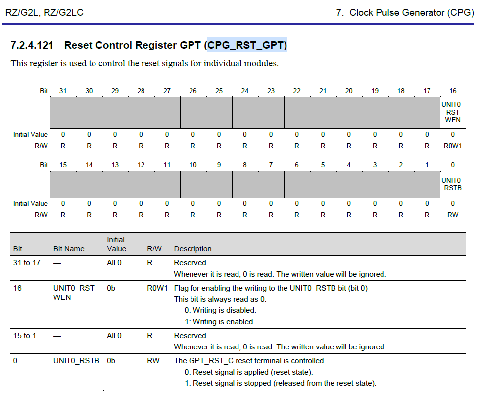

Linux reset framework
- 1. 问题
- 2. linux reset framework
- 3. 分析
- 4. Call trace
- 5. 结论
- 6. 参考
1. 问题
gpt3和gpt6同时打开，内核启动阶段会报错failed to get cpg reset
[root@okg2l ~ ]# dmesg |grep gpt
[ 0.090055] gpt-rzg2l 10048300.gpt: RZ/G2L GPT Driver probed
[ 0.090361] rzg2l_gpt_probe+0x90/0x378
[ 0.090409] rzg2l_gpt_driver_init+0x18/0x20
[ 0.090453] gpt-rzg2l 10048600.gpt: failed to get cpg reset
[ 0.090506] gpt-rzg2l: probe of 10048600.gpt failed with error -16
错误-16 #define EBUSY 16 /* Device or resource busy */
在drivers/pwm/gpt-rzg2l.c的rzg2l_gpt_probe函数中可以看到关于cpg的配置信息
在probe过程中，需要申请rstc，即复位控制器资源，但是，只有第一次gpt3能成功获取，第二次gpt6就不能再获取这个资源
2. linux reset framework
soc内部会有很多独立的模块，比如串口，定时器，spi等，对于这些外设，使用的时候可能需要用到复位信号，软件通过操作某些寄存器（一般一个外设对应1bit）即可完成对外设的复位。
kernel内抽象了一个reset framework，给reset的provider提供了统一的reset资源的管理手段，为reset的consumer提供便捷、统一的复位控制API。
2.1. 对于provider
接口在include/linux/reset-controller.h
主要是构建struct reset_controller_dev结构体
/**
* struct reset_controller_dev - reset controller entity that might
* provide multiple reset controls
* @ops: a pointer to device specific struct reset_control_ops
* @owner: kernel module of the reset controller driver
* @list: internal list of reset controller devices
* @reset_control_head: head of internal list of requested reset controls
* @dev: corresponding driver model device struct
* @of_node: corresponding device tree node as phandle target
* @of_reset_n_cells: number of cells in reset line specifiers
* @of_xlate: translation function to translate from specifier as found in the
* device tree to id as given to the reset control ops
* @nr_resets: number of reset controls in this reset controller device
*/
struct reset_controller_dev {
const struct reset_control_ops *ops;
struct module *owner;
struct list_head list;
struct list_head reset_control_head;
struct device *dev;
struct device_node *of_node;
int of_reset_n_cells;
int (*of_xlate)(struct reset_controller_dev *rcdev,
const struct of_phandle_args *reset_spec);
unsigned int nr_resets;
};
然后调用相应接口函数向内核注册reset设备
int reset_controller_register(struct reset_controller_dev *rcdev);
void reset_controller_unregister(struct reset_controller_dev *rcdev);
struct device;
int devm_reset_controller_register(struct device *dev,
struct reset_controller_dev *rcdev);
void reset_controller_add_lookup(struct reset_control_lookup *lookup,
unsigned int num_entries);
2.2. 对于consumer
接口在include/linux/reset.h
consumer设备在自己的dts node中使用resets、reset-names等关键字声明所需的reset资源。resets属性的具体格式由provider决定
device {
resets = <&rst 20>;
reset-names = "reset";
};
consumer driver在需要的时候，先获取设备树中设置的reset资源rstc
static inline struct reset_control *devm_reset_control_get(struct device *dev, const char *id)
static inline struct reset_control *devm_reset_control_get_shared(struct device *dev, const char *id)
static inline struct reset_control *devm_reset_control_get_optional(struct device *dev, const char *id)
获取到rstc之后即可调用API复位设备
int reset_control_reset(struct reset_control *rstc);
int reset_control_assert(struct reset_control *rstc);
int reset_control_deassert(struct reset_control *rstc);
int reset_control_status(struct reset_control *rstc);
2.3. 附
- 在linux reset framework中，每个reset_controller_dev都维护着一个链表，这个链表里存放的是系统运行过程中被申请的reset资源
- 每一个外设对应的复位控制相关寄存器都是一个reset资源
- reset资源体现为
struct reset_control *rstc
- reset资源体现为
- kernel把芯片上所有的reset资源统一交由reset_controller_dev管理
include/dt-bindings/clock/r9a07g044l-cpg.h定义了rzg2l芯片的所有reset资源
例如芯片手册 7.2.4.121 Reset Control Register GPT (CPG_RST_GPT)

对于gpt来说，gpt01234567共用一个复位信号，所以一共有1个reset资源，在r9a07g044l-cpg.h中有相应定义
#define R9A07G044L_CLK_GPT 6
芯片手册 7.2.4.138 Reset Control Register SCIF (CPG_RST_SCIF)是串口scif的复位相关寄存器
对于scif来说，scif01234，每一路串口都有一个独立的复位信号，所以一共有5个reset资源，在r9a07g044l-cpg.h中有相应定义
#define R9A07G044L_CLK_SCIF0 13
#define R9A07G044L_CLK_SCIF1 14
#define R9A07G044L_CLK_SCIF2 15
#define R9A07G044L_CLK_SCIF3 16
#define R9A07G044L_CLK_SCIF4 17
3. 分析
static int rzg2l_gpt_probe(struct platform_device *pdev)
{
...
rzg2l_gpt->rstc = devm_reset_control_get(&pdev->dev, NULL);
if (IS_ERR(rzg2l_gpt->rstc)) {
dev_err(δpdev->dev, "failed to get cpg reset\n");
// return PTR_ERR(rzg2l_gpt->rstc);
}
...
}
对rstc异常情况不return，继续执行，第一次（gpt-rzg2l 10048300.gpt）在devm_reset_control_get()可以正常执行，第二次（gpt-rzg2l 10048600.gpt）会报错
[ 0.092427] gpt-rzg2l 10048300.gpt: GPT not use POEG
[ 0.092642] gpt-rzg2l 10048300.gpt: RZ/G2L GPT Driver probed
[ 0.092851] gpt-rzg2l 10048600.gpt: GPT not use POEG
[ 0.092859] ------------[ cut here ]------------
[ 0.092903] WARNING: CPU: 1 PID: 1 at drivers/reset/core.c:419 __reset_control_get_internal+0xdc/0x128
[ 0.092906] Modules linked in:
[ 0.092916] CPU: 1 PID: 1 Comm: swapper/0 Not tainted 4.19.165-cip41-arm64-renesas #2
[ 0.092919] Hardware name: Forlinx OKG2L Evaluation board (DT)
[ 0.092923] pstate: 40c00005 (nZcv daif +PAN +UAO)
[ 0.092928] pc : __reset_control_get_internal+0xdc/0x128
[ 0.092933] lr : __reset_control_get_internal+0xdc/0x128
[ 0.092935] sp : ffff000008013a50
[ 0.092937] x29: ffff000008013a50 x28: 0000000000000000
[ 0.092942] x27: 0000000000000000 x26: ffff000008e204e0
[ 0.092946] x25: ffff000008e7d060 x24: 0000000000000000
[ 0.092950] x23: 0000000000000000 x22: ffff80007d72aa80
[ 0.092954] x21: 0000000000000006 x20: ffff80007d72aaa0
[ 0.092958] x19: ffff80007ce9b200 x18: ffff000008ec1000
[ 0.092962] x17: 0000000000000fff x16: 0000000000007fff
[ 0.092966] x15: 00000000fffffff0 x14: ffff000008f60c72
[ 0.092969] x13: 0000000000000000 x12: ffff000008f60000
[ 0.092973] x11: ffff000008ec1000 x10: ffff000008f602c8
[ 0.092977] x9 : 0000000000000000 x8 : 0000000000000004
[ 0.092981] x7 : ffff000008f60000 x6 : 000000000000008c
[ 0.092985] x5 : 0000000000000000 x4 : 0000000000000000
[ 0.092988] x3 : ffffffffffffffff x2 : 1be4e7ac3d036e00
[ 0.092992] x1 : 0000000000000000 x0 : 0000000000000024
[ 0.092997] Call trace:
[ 0.093003] __reset_control_get_internal+0xdc/0x128
[ 0.093008] __of_reset_control_get+0x13c/0x1b8
[ 0.093011] __reset_control_get+0x30/0x1a8
[ 0.093016] __devm_reset_control_get+0x64/0xd8
[ 0.093024] rzg2l_gpt_probe+0x130/0x4a8
[ 0.093032] platform_drv_probe+0x50/0xa0
[ 0.093036] really_probe+0x1dc/0x298
[ 0.093040] driver_probe_device+0x54/0xe8
[ 0.093044] __driver_attach+0xe0/0xe8
[ 0.093048] bus_for_each_dev+0x70/0xc0
[ 0.093051] driver_attach+0x20/0x28
[ 0.093055] bus_add_driver+0x1dc/0x208
[ 0.093059] driver_register+0x60/0x110
[ 0.093063] __platform_driver_register+0x44/0x50
[ 0.093071] rzg2l_gpt_driver_init+0x18/0x20
[ 0.093078] do_one_initcall+0x74/0x178
[ 0.093084] kernel_init_freeable+0x18c/0x224
[ 0.093092] kernel_init+0x10/0x104
[ 0.093096] ret_from_fork+0x10/0x18
[ 0.093103] ---[ end trace 7dc9776788e7d665 ]---
[ 0.093110] gpt-rzg2l 10048600.gpt: failed to get cpg reset
[ 0.093128] ------------[ cut here ]------------
[ 0.093153] WARNING: CPU: 1 PID: 1 at drivers/reset/core.c:360 reset_control_deassert+0x128/0x138
[ 0.093155] Modules linked in:
[ 0.093161] CPU: 1 PID: 1 Comm: swapper/0 Tainted: G W 4.19.165-cip41-arm64-renesas #2
[ 0.093163] Hardware name: Forlinx OKG2L Evaluation board (DT)
[ 0.093166] pstate: 40c00005 (nZcv daif +PAN +UAO)
[ 0.093171] pc : reset_control_deassert+0x128/0x138
[ 0.093175] lr : reset_control_deassert+0x128/0x138
[ 0.093177] sp : ffff000008013b90
[ 0.093179] x29: ffff000008013b90 x28: 0000000000000000
[ 0.093183] x27: 0000000000000000 x26: ffff000008e204e0
[ 0.093187] x25: ffff000008e7d060 x24: ffff000008edeaf0
[ 0.093191] x23: ffff80007d687400 x22: ffff000008eaa688
[ 0.093195] x21: ffff80007cd6fa80 x20: ffff80007d687410
[ 0.093199] x19: fffffffffffffff0 x18: ffff000008ec1000
[ 0.093203] x17: 0000000000000fff x16: 0000000000007fff
[ 0.093207] x15: 00000000fffffff0 x14: ffff000008f60c72
[ 0.093211] x13: 0000000000000000 x12: ffff000008f60000
[ 0.093215] x11: ffff000008ec1000 x10: ffff000008f602c8
[ 0.093219] x9 : 0000000000000000 x8 : 0000000000000004
[ 0.093222] x7 : ffff000008f60000 x6 : 00000000000000ba
[ 0.093226] x5 : 0000000000000000 x4 : 0000000000000000
[ 0.093230] x3 : ffffffffffffffff x2 : 1be4e7ac3d036e00
[ 0.093233] x1 : 0000000000000000 x0 : 0000000000000024
[ 0.093237] Call trace:
[ 0.093241] reset_control_deassert+0x128/0x138
[ 0.093246] rzg2l_gpt_probe+0x140/0x4a8
[ 0.093251] platform_drv_probe+0x50/0xa0
[ 0.093254] really_probe+0x1dc/0x298
[ 0.093258] driver_probe_device+0x54/0xe8
[ 0.093262] __driver_attach+0xe0/0xe8
[ 0.093265] bus_for_each_dev+0x70/0xc0
[ 0.093269] driver_attach+0x20/0x28
[ 0.093273] bus_add_driver+0x1dc/0x208
[ 0.093276] driver_register+0x60/0x110
[ 0.093280] __platform_driver_register+0x44/0x50
[ 0.093285] rzg2l_gpt_driver_init+0x18/0x20
[ 0.093289] do_one_initcall+0x74/0x178
[ 0.093292] kernel_init_freeable+0x18c/0x224
[ 0.093297] kernel_init+0x10/0x104
[ 0.093301] ret_from_fork+0x10/0x18
[ 0.093303] ---[ end trace 7dc9776788e7d666 ]---
[ 0.093506] gpt-rzg2l 10048600.gpt: RZ/G2L GPT Driver probed
根据设备树中的compatible属性，两个节点会调用两次static int rzg2l_gpt_probe(struct platform_device *pdev)函数
报错信息来自rzg2l_gpt->rstc = devm_reset_control_get(&pdev->dev, NULL);，设备树里面有gpt3，gpt6两个节点都enabled，第一次执行不报错，第二次报错
4. Call trace
rzg2l_gpt->rstc = devm_reset_control_get(&pdev->dev, NULL);return devm_reset_control_get_exclusive(dev, id);return __devm_reset_control_get(dev, id, 0, false, false);rstc = __reset_control_get(&pdev->dev, NULL, 0, false, false);return __of_reset_control_get(pdev->dev.of_node, NULL, 0, false, false);rstc = __reset_control_get_internal(rcdev, rstc_id, shared);
4.1. devm_reset_control_get(dev, id)
dev是platform device，这里即gpt设备idNULL
static inline struct reset_control *devm_reset_control_get(
struct device *dev, const char *id)
{
return devm_reset_control_get_exclusive(dev, id);
}
4.2. devm_reset_control_get_exclusive()
static inline struct reset_control *
__must_check devm_reset_control_get_exclusive(struct device *dev,
const char *id)
{
return __devm_reset_control_get(dev, id, 0, false, false);
}
4.3. __devm_reset_control_get(dev, id, index, shared, optional)
indexindex是指第0个sharedreset资源是否共享optional是否可选，是否为非必选
reset控制器是设备，所有的reset资源都视为设备，这里是申请reset设备资源
struct reset_control *__devm_reset_control_get(struct device *dev,
const char *id, int index, bool shared,
bool optional)
{
struct reset_control **ptr, *rstc;
ptr = devres_alloc(devm_reset_control_release, sizeof(*ptr),
GFP_KERNEL);
if (!ptr)
return ERR_PTR(-ENOMEM);
rstc = __reset_control_get(dev, id, index, shared, optional); //获取rstc
if (!IS_ERR(rstc)) {
*ptr = rstc;
devres_add(dev, ptr);
} else {
devres_free(ptr);
}
return rstc;
}
EXPORT_SYMBOL_GPL(__devm_reset_control_get);
4.4. __reset_control_get
struct reset_control *__reset_control_get(struct device *dev, const char *id,
int index, bool shared, bool optional)
{
if (dev->of_node)
return __of_reset_control_get(dev->of_node, id, index, shared, //解析设备树，获取rstc
optional);
return __reset_control_get_from_lookup(dev, id, shared, optional);
}
EXPORT_SYMBOL_GPL(__reset_control_get);
4.5. __of_reset_control_get(pdev->dev.of_node, NULL, 0, false, false)
node传入的设备树节点，gpt的设备树节点id和reset-names相关，值为NULL
__of_reset_control_get()解析传入的gpt设备树节点，返回一个reset资源，它不关心这个reset资源是需要新建还是可以从之前的链表中查找到
gpt6: gpt@10048600 {
compatible = "renesas,gpt-r9a07g044l";
reg = <0 0x10048600 0 0xa4>;
#pwm-cells = <2>;
interrupts = <GIC_SPI 296 IRQ_TYPE_EDGE_RISING>,
<GIC_SPI 297 IRQ_TYPE_EDGE_RISING>,
<GIC_SPI 298 IRQ_TYPE_EDGE_RISING>,
<GIC_SPI 299 IRQ_TYPE_EDGE_RISING>,
<GIC_SPI 300 IRQ_TYPE_EDGE_RISING>,
<GIC_SPI 301 IRQ_TYPE_EDGE_RISING>,
<GIC_SPI 302 IRQ_TYPE_EDGE_RISING>,
<GIC_SPI 303 IRQ_TYPE_EDGE_RISING>,
<GIC_SPI 304 IRQ_TYPE_EDGE_RISING>,
<GIC_SPI 305 IRQ_TYPE_EDGE_RISING>,
<GIC_SPI 306 IRQ_TYPE_EDGE_RISING>,
<GIC_SPI 307 IRQ_TYPE_EDGE_RISING>,
<GIC_SPI 308 IRQ_TYPE_EDGE_RISING>;
interrupt-names = "gtcia", "gtcib", "gtcic", "gtcid",
"gtcie", "gtcif", "gtciada", "gtciadb",
"gtciv", "gtciu", "gtcih", "gtcil",
"gtdei";
clocks = <&cpg CPG_MOD R9A07G044L_CLK_GPT>;
power-domains = <&cpg>;
resets = <&cpg R9A07G044L_CLK_GPT>;
status = "disabled";
};
&gpt6 {
pinctrl-0 = <&gpt6_pins>;
pinctrl-names = "default";
channel="both_AB";
status = "okay";
};
struct reset_control *__of_reset_control_get(struct device_node *node,
const char *id, int index, bool shared,
bool optional)
{
struct reset_control *rstc;
struct reset_controller_dev *r, *rcdev;
struct of_phandle_args args;
int rstc_id;
int ret;
if (!node)
return ERR_PTR(-EINVAL);
if (id) { //id是传入的形参，值为NULL
index = of_property_match_string(node,
"reset-names", id);
if (index == -EILSEQ)
return ERR_PTR(index);
if (index < 0)
return optional ? NULL : ERR_PTR(-ENOENT);
}
ret = of_parse_phandle_with_args(node, "resets", "#reset-cells",
index, &args); //根据gpt6节点内的“resets”属性，查找“#reset-cells”属性的节点？？？
//index值为0
if (ret == -EINVAL)
return ERR_PTR(ret);
if (ret)
return optional ? NULL : ERR_PTR(ret);
mutex_lock(&reset_list_mutex);
rcdev = NULL;
list_for_each_entry(r, &reset_controller_list, list) { //在reset_controller_list链表中查找相应的reset_controller_dev
if (args.np == r->of_node) { //args.np是指向设备树中某个节点的指针
rcdev = r;
break;
}
}
if (!rcdev) {
rstc = ERR_PTR(-EPROBE_DEFER);
goto out;
}
if (WARN_ON(args.args_count != rcdev->of_reset_n_cells)) {
rstc = ERR_PTR(-EINVAL);
goto out;
}
////在这之前的代码整体就是为了获得rcdev操作句柄，g2l只有一个reset_controller_dev
rstc_id = rcdev->of_xlate(rcdev, &args); //解析gpt设备树节点中resets属性，获取要复位的外设的index，include/dt-bindings/clock/r9a07g044l-cpg.h
if (rstc_id < 0) {
rstc = ERR_PTR(rstc_id);
goto out;
}
/* reset_list_mutex also protects the rcdev's reset_control list */
//rcdev 设备树中 GPT节点中使用的 reset控制器
rstc = __reset_control_get_internal(rcdev, rstc_id, shared);
out:
mutex_unlock(&reset_list_mutex);
of_node_put(args.np);
return rstc;
}
EXPORT_SYMBOL_GPL(__of_reset_control_get);
4.5.1. 关于of_parse_phandle_with_args()
https://blog.csdn.net/mars_Vessalius/article/details/116483979
/**
* of_parse_phandle_with_args() - Find a node pointed by phandle in a list
* @np: pointer to a device tree node containing a list
* @list_name: property name that contains a list
* @cells_name: property name that specifies phandles' arguments count
* @index: index of a phandle to parse out
* @out_args: optional pointer to output arguments structure (will be filled)
*
* This function is useful to parse lists of phandles and their arguments.
* Returns 0 on success and fills out_args, on error returns appropriate
* errno value.
*
* Caller is responsible to call of_node_put() on the returned out_args->np
* pointer.
*
* Example:
*
* phandle1: node1 {
* #list-cells = <2>;
* }
*
* phandle2: node2 {
* #list-cells = <1>;
* }
*
* node3 {
* list = <&phandle1 1 2 &phandle2 3>;
* }
*
* To get a device_node of the `node2' node you may call this:
* of_parse_phandle_with_args(node3, "list", "#list-cells", 1, &args);
*/
int of_parse_phandle_with_args(const struct device_node *np, const char *list_name,
const char *cells_name, int index, struct of_phandle_args *out_args)
这里的#list-cells指的是引用的时候需要几个参数，对于node3，node3中定义了list属性，类似一个数组。在list数组中有两个元素，这两个元素分别是对phandle1和phandle2的引用，而且要根据phandle1和phandle2的#list-cells的值写入相应个数的参数。即，phandle1的参数1 2，phandle2的参数 3 ？？？？？
对于gpt代码来说，
ret = of_parse_phandle_with_args(node, "resets", "#reset-cells", index, &args);
也就是在node节点（gpt6节点）中的resets属性中查找第0个？？？
https://www.kernel.org/doc/Documentation/devicetree/bindings/reset/reset.txt
- 怀疑是复位信号有问题，但是，对比了手册 7.2.4.138 Reset Control Register SCIF (CPG_RST_SCIF)和 7.2.4.121 Reset Control Register GPT (CPG_RST_GPT)
- 结果发现，对于gpt来说，只有一个复位信号，不像scif，能分别对01234复位。所以这个就是为什么关于gpt的描述，手册里面写他有8个channel？
4.6. __reset_control_get_internal(rcdev, index, shared)
rcdev最终指向的是reset_controller_dev，对于G2L来说就是cpg，唯一index是设备树中gpt节点的resets属性的值shared，bool，是否为共享资源index
__reset_control_get_internal()根据index查找符合要求的rstc，或者新建rstc并加入reset_controller_dev的队列，交由reset_controller_dev管理
如果要查找的reset资源已经存在于链表里，并且这个资源是shared，就直接返回这个reset资源；如果不是shared，那就报错return ERR_PTR(-EBUSY);
static struct reset_control *__reset_control_get_internal(
struct reset_controller_dev *rcdev,
unsigned int index, bool shared)
{
struct reset_control *rstc;
lockdep_assert_held(&reset_list_mutex);
list_for_each_entry(rstc, &rcdev->reset_control_head, list) {
if (rstc->id == index) {
if (WARN_ON(!rstc->shared || !shared))
return ERR_PTR(-EBUSY); //-16是从这里返回的
kref_get(&rstc->refcnt); //refer count
return rstc;
}
}
rstc = kzalloc(sizeof(*rstc), GFP_KERNEL);
if (!rstc)
return ERR_PTR(-ENOMEM);
try_module_get(rcdev->owner);
rstc->rcdev = rcdev;
list_add(&rstc->list, &rcdev->reset_control_head);
rstc->id = index;
kref_init(&rstc->refcnt);
rstc->shared = shared;
return rstc;
}
5. 结论
修改 drivers/pwm/gpt-rzg2l.c
static int rzg2l_gpt_probe(struct platform_device *pdev)
{
...
// rzg2l_gpt->rstc = devm_reset_control_get(&pdev->dev, NULL);
rzg2l_gpt->rstc = devm_reset_control_get_shared(&pdev->dev, NULL);
if (IS_ERR(rzg2l_gpt->rstc)) {
dev_err(δpdev->dev, "failed to get cpg reset\n");
return PTR_ERR(rzg2l_gpt->rstc);
}
...
}